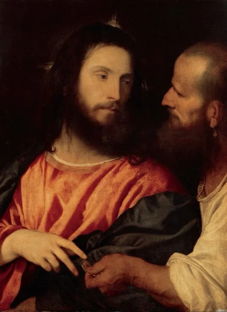
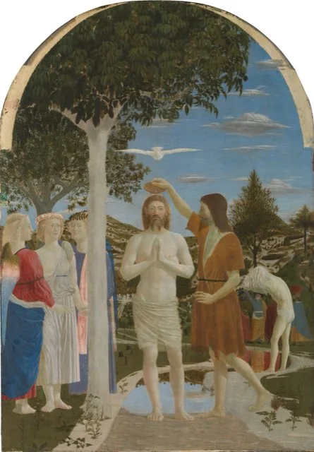
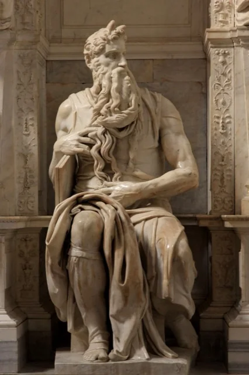
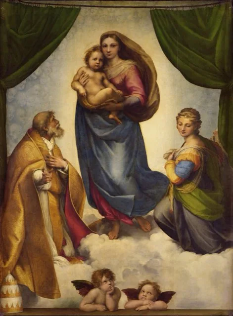
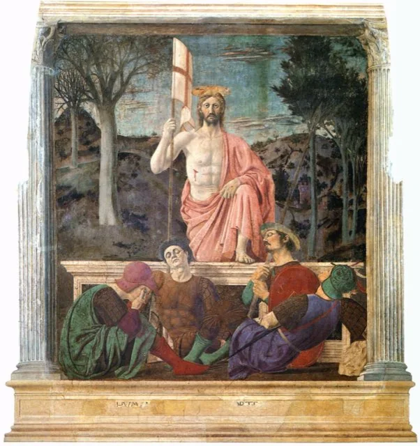
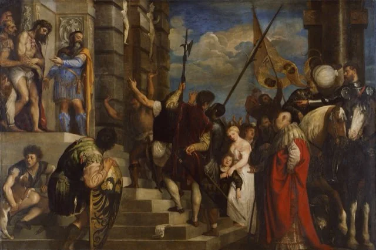
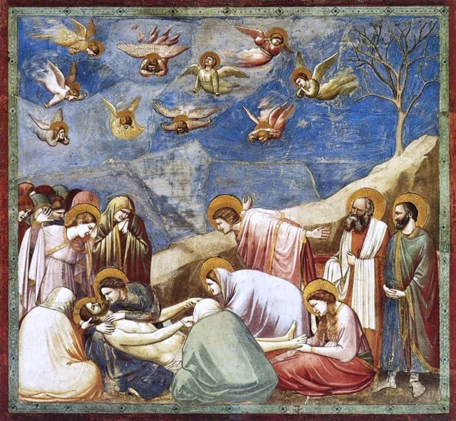
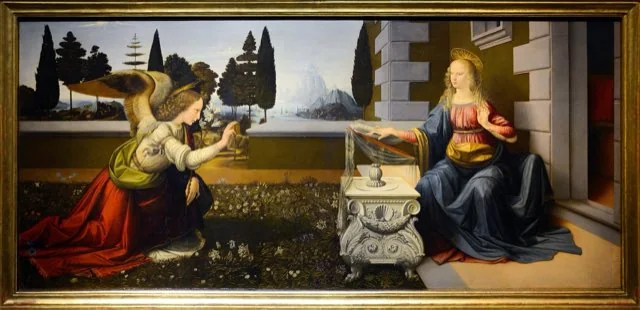
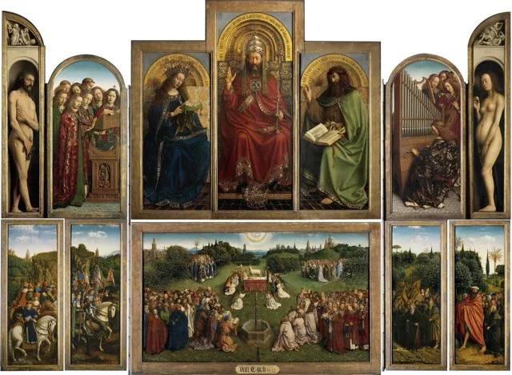

Sayings and fragments
6 writings-
 AD 1251st–2nd century, disputed (Greek fragments c. 200–250; Coptic c. 350)
AD 1251st–2nd century, disputed (Greek fragments c. 200–250; Coptic c. 350)
The Gospel of Thomas
Unknown (attributed to Didymos Judas Thomas); tr. Mark M. Mattison
A collection of 114 sayings of “the living Jesus”, complete in Coptic from Nag Hammadi with earlier Greek fragments from Oxyrhynchus. Many parallel the Synoptics; its date and independence are among the most debated questions in Gospel study.
→ -

AD 55c. 40–70, if it existedQ: The Sayings Source (a Scholarly Reconstruction)
Hypothetical source; reconstructed text tr. Mark M. Mattison
Q is a hypothetical sayings source that, on the two-source theory, Matthew and Luke used alongside Mark. No manuscript exists; this is a modern reconstruction of the shared non-Markan material, translated from the Critical Edition of Q.
→ -
 AD 175Copy 2nd century (c. 150–200); published 2023
AD 175Copy 2nd century (c. 150–200); published 2023
Sayings of Jesus (Papyrus Oxyrhynchus 5575)
Unknown; tr. Mark M. Mattison
A small second-century papyrus, published in 2023, preserving sayings of Jesus close to Matthew 6, Luke 12 and the Gospel of Thomas: on anxiety, the birds and the lilies, fasting from the world, and seeking the kingdom.
→ -

AD 1502nd century (papyrus c. 150–200)The Egerton Gospel (Papyrus Egerton 2)
Unknown; tr. Mark M. Mattison
Fragments of an unknown second-century gospel on papyrus: Jesus tells the rulers to search the scriptures, escapes arrest, heals a leper and answers a question about paying kings. Among the oldest surviving non-canonical Gospel texts.
→ -

AD 2252nd–3rd century (Codex Tchacos, c. 280 ± 60)The Stranger’s Book (Allogenes, Codex Tchacos)
Unknown; tr. Mark M. Mattison
A damaged Sethian text from Codex Tchacos whose hero, “Stranger”, is tempted by Satan, transfigured in a bright cloud on Mount Tabor and taught to ascend past hostile powers. It reuses Gospel scenes without naming Jesus.
→ -
 AD 200Disputed: c. 200 if authentic; reported 1958
AD 200Disputed: c. 200 if authentic; reported 1958
The Secret Gospel of Mark (the Mar Saba Letter)
Letter attributed to Clement of Alexandria; tr. Samuel Zinner
A letter ascribed to Clement of Alexandria, reported by Morton Smith in 1958, that quotes a “more spiritual” expanded Gospel of Mark. The manuscript cannot now be examined, and whether it is ancient or a modern forgery is an open question for your discernment.
→
Infancy gospels
2 writings-
 AD 1702nd century (c. 150–200)
AD 1702nd century (c. 150–200)
The Infancy Gospel of James (Protevangelium of James)
Unknown (attributed to James); tr. Mark M. Mattison
A second-century legend of Mary’s birth, childhood and virginity, ending with Jesus’s birth in a cave near Bethlehem. Not a historical source, but enormously influential: it gave the Church the names Joachim and Anne.
→ -

AD 1502nd century in early form (Greek manuscript 11th c.)The Infancy Gospel of Thomas
Unknown; tr. Mark M. Mattison
Legends of Jesus between five and twelve: clay sparrows that fly, curses and healings, and lessons that confound his teachers. A second-century story cycle that fills the canonical Gospels’ silence, not a record of his childhood.
→
Passion and resurrection
2 writings-

AD 1502nd century (Akhmim copy 8th–9th c.)The Gospel of Peter (Akhmim Fragment)
Unknown; tr. Mark M. Mattison
A second-century Passion and resurrection narrative told in Peter’s name, known from an Egyptian manuscript found in 1886–87. It retells the canonical story with new scenes, including giant figures and a speaking cross at the tomb.
→ -

AD 4004th–5th century in present form (tr. 1870)The Gospel of Nicodemus (Acts of Pilate) and the Pilate Letters
Unknown; tr. Alexander Walker (1870)
Late-antique Christian legends of Jesus’s trial before Pilate, his descent into Hades, and letters in Pilate’s name, from the Ante-Nicene Fathers. Not Roman records, but hugely influential on medieval art and devotion.
→
Gnostic writings
8 writings-

AD 1502nd century (Greek fragments 3rd c.)The Gospel of Mary
Unknown; tr. Mark M. Mattison
A fragmentary second-century dialogue in which the risen Savior teaches and departs, Mary relates a vision of the soul’s ascent, and Peter and Andrew dispute her authority. Evidence for early debates about revelation and leadership.
→ -
 AD 150c. 130–170 (Coptic copy c. 280 ± 60)
AD 150c. 130–170 (Coptic copy c. 280 ± 60)
The Gospel of Judas
Unknown; tr. Mark M. Mattison
A second-century revelation dialogue, known to Irenaeus and recovered in Coptic in Codex Tchacos, in which Jesus mocks the disciples’ worship and gives Judas secret teaching before the betrayal. A witness to later debates, not to the events.
→ -

AD 225Late 2nd–3rd century (Coptic copy c. 350)The Gospel of Philip
Unknown; tr. Mark M. Mattison
A Valentinian anthology of sayings and reflections on baptism, anointing, the Eucharist and the bridal chamber, preserved at Nag Hammadi. Often sensationalised for its lines on Mary Magdalene, it is evidence for early Christian ritual thought.
→ -
 AD 160c. 140–180 (Coptic copies 4th c.)
AD 160c. 140–180 (Coptic copies 4th c.)
The Gospel of Truth
Unknown (Valentinian, possibly Valentinus); tr. Mark M. Mattison
A second-century Valentinian meditation on how Jesus, “nailed to a tree”, made known the unknown Father and dispelled ignorance. Probably the work Irenaeus called the Gospel of Truth; preserved at Nag Hammadi.
→ -
 AD 1502nd century (Coptic copy 4th c.)
AD 1502nd century (Coptic copy 4th c.)
The Secret Book of James (Apocryphon of James)
Unknown (attributed to James); tr. Mark M. Mattison
A second-century letter in James’s name relating secret teaching of the risen Savior to James and Peter before his ascension: be “filled”, seek suffering, believe in the cross. Preserved only at Nag Hammadi.
→ -
AD 2503rd century (Askew Codex, 4th c.); tr. 1924
Pistis Sophia
Unknown; tr. George Horner (1924)
A Coptic Gnostic work in which the risen Jesus, eleven years after the resurrection, ascends in light, returns and teaches the disciples, Mary above all, about the heavens and the saving mysteries. Narrated revelation, not history.
→ -
 ✠1907 (on Acts of John 97–102, 2nd–3rd c.)
✠1907 (on Acts of John 97–102, 2nd–3rd c.)
G. R. S. Mead, The Gnostic Crucifixion (1907)
G. R. S. Mead
A 1907 theosophical study by G. R. S. Mead of the Vision of the Cross in the Acts of John, where the Lord tells John on the Mount of Olives that he did not suffer what the crowd will say. A docetic text read through an early-20th-century lens.
→ -
 AD 2503rd century text (Lamplugh’s version 1918)
AD 2503rd century text (Lamplugh’s version 1918)
The Gnôsis of the Light (Untitled Text of the Bruce Codex)
Unknown; tr. F. Lamplugh (1918)
A 1918 English version of the Untitled Text of the Bruce Codex, a Sethian Gnostic hymn of the Pleroma and its emanations, in which Jesus and Christ appear only as heavenly beings. Lamplugh’s framing is an early-20th-century mystical reading.
→
Harmonies and collections
3 writings-

AD 170c. 170 (Arabic version 11th c.; tr. 1896)Tatian’s Diatessaron
Tatian the Assyrian; tr. Hope W. Hogg (1896)
Tatian’s single harmony of Matthew, Mark, Luke and John, made about 170 and long the gospel of the Syriac churches. It shows the four Gospels already treated as a set; this page gives its opening and its Passion and resurrection.
→ -
AD 550Arabic Infancy 5th–6th c.; Abgar letters by c. 300; Hone 1820
Hone’s Apocryphal New Testament: the Arabic Infancy Gospel and the Abgar Letters
William Hone (ed., 1820), from the translations of Jeremiah Jones and William Wake
From William Hone’s 1820 Apocryphal New Testament: the Arabic Infancy Gospel, with its legends of the Holy Family in Egypt, and the letters of Jesus and King Abgar of Edessa that Eusebius reported. Legends, not history.
→ -
 ✠Compiled 2026
✠Compiled 2026
Registry of Gospels and Their Canonical Status
The Jesus Archive research dossier
A table of the gospels and gospel-type texts about Jesus, canonical and non-canonical, with estimated dates, earliest manuscripts, ancient verdicts and status today, linked to the texts on this site.
→